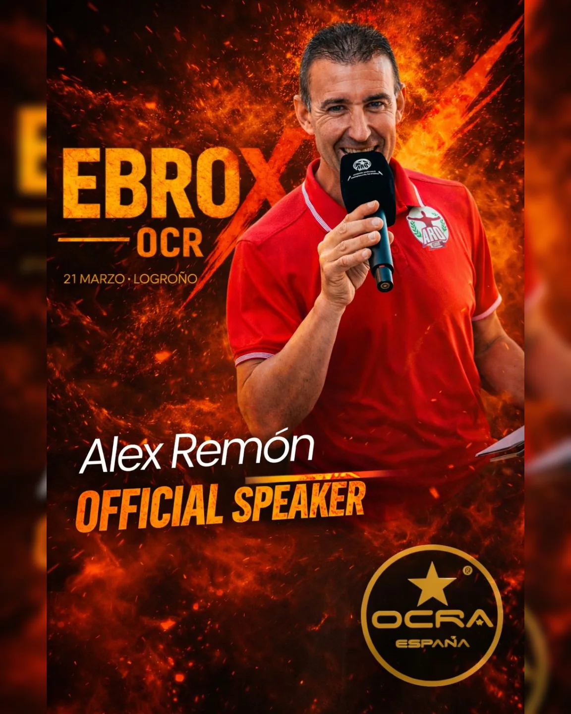

La experiencia EBROX

21 de marzo de 2026 · Logroño
OCR real. Barro, esfuerzo y superación.
EBROX OCR Race Logroño es una carrera de obstáculos diseñada para todos los niveles, desde atletas de élite hasta familias y equipos.
Un evento con identidad OCR real: dureza, barro, obstáculos técnicos y normativa OCRA España.
Competición oficial, clasificatoria nacional.
Misma exigencia, sin licencia federativa.
Accesible, segura y divertida.
Amigos, familias y empresas.
Modalidad adaptada para 12–16 años.
Deporte y diversión para los más pequeños.
| Modalidad | Distancia | Obstáculos |
|---|---|---|
| Élite OCRA / No OCRA | 13 km | 40 |
| Popular / Juvenil | 7 km | 30 |
| Equipos | 5 km | - |
| Kids | 2 km | 15 |
